Statistical Learning#
2.1What Is Statistical Learning?#
More generally, suppose that we observe a quantitative response Y and p different predictors, X1, X2,⋯, Xp. We assume that there is some relationship between Y and X = (X1, X2,⋯, Xp), which can be written in the very general form Here f is some fixed but unknown function of X1,⋯, Xp, and ϵ is a random error term, which is independent of X and has mean zero. In this formulation, f represents the systematic information that X provides about Y.
In order to motivate our study of statistical learning, we begin with a simple example. Suppose that we are statistical consultants hired by a client to investigate the association between advertising and sales of a particular product. The Advertising data set consists of the sales of that product in 200 different markets, along with advertising budgets for the product in each of those markets for three different media: TV, radio, and newspaper. The data are displayed in Figure 2.1. It is not possible for our client to directly increase sales of the product. On the other hand, they can control the advertising expenditure in each of the three media. Therefore, if we determine that there is an association between advertising and sales, then we can instruct our client to adjust advertising budgets, thereby indirectly increasing sales. In other words, our goal is to develop an accurate model that can be used to predict sales on the basis of the three media budgets.
In this setting, the advertising budgets are input variables while sales is an output variable. The input variables are typically denoted using the symbol X, with a subscript to distinguish them. So X1 might be the TV budget, X2 the radio budget, and X3 the newspaper budget. The inputs go by different names, such as predictors, independent variables, features, or sometimes just variables. The output variable—in this case, sales—is often called the response or dependent variable, and is typically denoted using the symbol Y. Throughout this book, we will use all of these terms interchangeably.

As another example, consider the left-hand panel of Figure 2.2, a plot of income versus years of education for 30 individuals in the Income data set. The plot suggests that one might be able to predict income using years of education. However, the function f that connects the input variable to the output variable is in general unknown. In this situation one must estimate f based on the observed points. Since Income is a simulated data set, f is known and is shown by the blue curve in the right-hand panel of Figure 2.2. The vertical lines represent the error terms ϵ. We note that some of the 30 observations lie above the blue curve and some lie below it; overall, the errors have approximately mean zero.
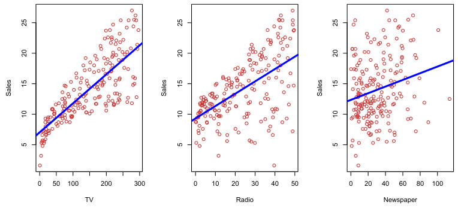
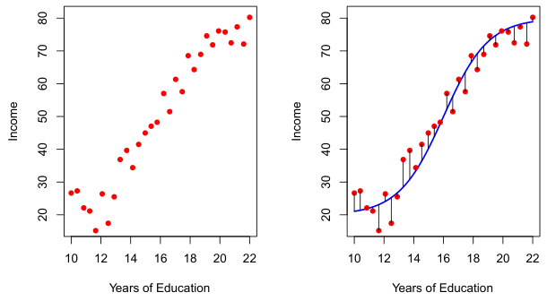
In general, the function f may involve more than one input variable. In Figure 2.3 we plot income as a function of years of education and seniority. Here f is a two-dimensional surface that must be estimated based on the observed data.
In essence, statistical learning refers to a set of approaches for estimating f. In this chapter we outline some of the key theoretical concepts that arise in estimating f, as well as tools for evaluating the estimates obtained.
2.1.1Why Estimate f?#
There are two main reasons that we may wish to estimate f: prediction and inference. We discuss each in turn.
Prediction In many situations, a set of inputs X are readily available, but the output Y cannot be easily obtained. In this setting, since the error term averages to zero, we can predict Y using
Why is the irreducible error larger than zero? The quantity ϵ may contain unmeasured variables that are useful in predicting Y: since we don’t measure them, f cannot use them for its prediction. The quantity ϵ may also contain unmeasurable variation. For example, the risk of an adverse reaction might vary for a given patient on a given day, depending on manufacturing variation in the drug itself or the patient’s general feeling of well-being on that day.

where f̂ represents our estimate for f, and Ŷ represents the resulting prediction for Y. In this setting, f̂ is often treated as a black box, in the sense that one is not typically concerned with the exact form of f̂, provided that it yields accurate predictions for Y.
As an example, suppose that X1,⋯, Xp are characteristics of a patient’s blood sample that can be easily measured in a lab, and Y is a variable encoding the patient’s risk for a severe adverse reaction to a particular drug. It is natural to seek to predict Y using X, since we can then avoid giving the drug in question to patients who are at high risk of an adverse reaction—that is, patients for whom the estimate of Y is high.
The accuracy of Ŷ as a prediction for Y depends on two quantities, which we will call the reducible error and the irreducible error. In general, f̂ will not be a perfect estimate for f, and this inaccuracy will introduce some error. This error is reducible because we can potentially improve the accuracy of f̂ by using the most appropriate statistical learning technique to estimate f. However, even if it were possible to form a perfect estimate for f, so that our estimated response took the form Ŷ = f(X), our prediction would still have some error in it! This is because Y is also a function of ϵ, which, by definition, cannot be predicted using X. Therefore, variability associated with ϵ also affects the accuracy of our predictions. This is known as the irreducible error, because no matter how well we estimate f, we cannot reduce the error introduced by ϵ.
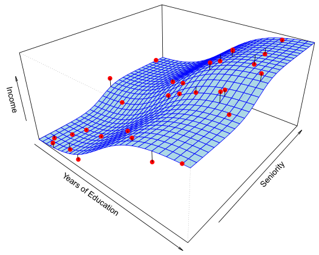
Consider a given estimate f̂ and a set of predictors X, which yields the prediction Ŷ = f̂(X). Assume for a moment that both f̂ and X are fixed, so that the only variability comes from ϵ. Then, it is easy to show that

ReducibleIrreducible where E(Y −Ŷ)2 represents the average, or expected value, of the squared difference between the predicted and actual value of Y, and Var(ϵ) represents the variance associated with the error term ϵ.
The focus of this book is on techniques for estimating f with the aim of minimizing the reducible error. It is important to keep in mind that the irreducible error will always provide an upper bound on the accuracy of our prediction for Y. This bound is almost always unknown in practice.
Inference We are often interested in understanding the association between Y and X1,⋯, Xp. In this situation we wish to estimate f, but our goal is not necessarily to make predictions for Y. Now f̂ cannot be treated as a black box, because we need to know its exact form. In this setting, one may be interested in answering the following questions:
- Which predictors are associated with the response? It is often the case that only a small fraction of the available predictors are substantially associated with Y. Identifying the few important predictors among a large set of possible variables can be extremely useful, depending on the application.
Finally, some modeling could be conducted both for prediction and inference. For example, in a real estate setting, one may seek to relate values of homes to inputs such as crime rate, zoning, distance from a river, air quality, schools, income level of community, size of houses, and so forth. In this case one might be interested in the association between each individual input variable and housing price—for instance, how much extra will a house be worth if it has a view of the river? This is an inference problem. Alternatively, one may simply be interested in predicting the value of a home given its characteristics: is this house under- or over-valued? This is a prediction problem.
- What is the relationship between the response and each predictor? Some predictors may have a positive relationship with Y, in the sense that larger values of the predictor are associated with larger values of Y. Other predictors may have the opposite relationship. Depending on the complexity of f, the relationship between the response and a given predictor may also depend on the values of the other predictors.
- Can the relationship between Y and each predictor be adequately summarized using a linear equation, or is the relationship more complicated? Historically, most methods for estimating f have taken a linear form. In some situations, such an assumption is reasonable or even desirable. But often the true relationship is more complicated, in which case a linear model may not provide an accurate representation of the relationship between the input and output variables.
In this book, we will see a number of examples that fall into the prediction setting, the inference setting, or a combination of the two.
For instance, consider a company that is interested in conducting a direct-marketing campaign. The goal is to identify individuals who are likely to respond positively to a mailing, based on observations of demographic variables measured on each individual. In this case, the demographic variables serve as predictors, and response to the marketing campaign (either positive or negative) serves as the outcome. The company is not interested in obtaining a deep understanding of the relationships between each individual predictor and the response; instead, the company simply wants to accurately predict the response using the predictors. This is an example of modeling for prediction.
In contrast, consider the Advertising data illustrated in Figure 2.1. One may be interested in answering questions such as:
– Which media are associated with sales?
– Which media generate the biggest boost in sales? or
– How large of an increase in sales is associated with a given increase in TV advertising?
This situation falls into the inference paradigm. Another example involves modeling the brand of a product that a customer might purchase based on variables such as price, store location, discount levels, competition price, and so forth. In this situation one might really be most interested in the association between each variable and the probability of purchase. For instance, to what extent is the product’s price associated with sales? This is an example of modeling for inference.
Depending on whether our ultimate goal is prediction, inference, or a combination of the two, different methods for estimating f may be appropriate. For example, linear models allow for relatively simple and interpretable inference, but may not yield as accurate predictions as some other approaches. In contrast, some of the highly non-linear approaches that we discuss in the later chapters of this book can potentially provide quite accurate predictions for Y, but this comes at the expense of a less interpretable model for which inference is more challenging.
2.1.2How Do We Estimate f?#
Throughout this book, we explore many linear and non-linear approaches for estimating f. However, these methods generally share certain characteristics. We provide an overview of these shared characteristics in this section. We will always assume that we have observed a set of n different data points. For example in Figure 2.2 we observed n = 30 data points. These observations are called the training data because we will use these observations to train, or teach, our method how to estimate f. Let xij represent the value of the jth predictor, or input, for observation i, where i = 1, 2,⋯, n and j = 1, 2,⋯, p. Correspondingly, let yi represent the response variable for the ith observation. Then our training data consist of

Our goal is to apply a statistical learning method to the training data in order to estimate the unknown function f. In other words, we want to find a function f̂ such that Y ≈f̂(X) for any observation (X, Y). Broadly speaking, most statistical learning methods for this task can be characterized as either parametric or non-parametric. We now briefly discuss these two types of approaches.
Parametric Methods Parametric methods involve a two-step model-based approach.
1. First, we make an assumption about the functional form, or shape, of f. For example, one very simple assumption is that f is linear in X:

This is a linear model, which will be discussed extensively in Chapter 3. Once we have assumed that f is linear, the problem of estimating f is greatly simplified. Instead of having to estimate an entirely arbitrary p-dimensional function f(X), one only needs to estimate the p + 1 coefficients β0, β1,⋯, βp.
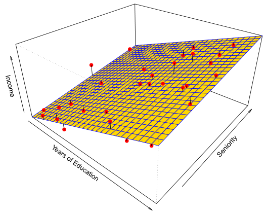
2. After a model has been selected, we need a procedure that uses the training data to fit or train the model. In the case of the linear model (2.4), we need to estimate the parameters β0, β1,⋯, βp. That is, we want to find values of these parameters such that
Figure 2.4 shows an example of the parametric approach applied to the Income data from Figure 2.3. We have fit a linear model of the form Since we have assumed a linear relationship between the response and the two predictors, the entire fitting problem reduces to estimating β0, β1, and β2, which we do using least squares linear regression. Comparing Figure 2.3 to Figure 2.4, we can see that the linear fit given in Figure 2.4 is not quite right: the true f has some curvature that is not captured in the linear fit. However, the linear fit still appears to do a reasonable job of capturing the positive relationship between years of education and income, as well as the slightly less positive relationship between seniority and income. It may be that with such a small number of observations, this is the best we can do.

The most common approach to fitting the model (2.4) is referred to as (ordinary) least squares, which we discuss in Chapter 3. However, least squares is one of many possible ways to fit the linear model. In Chapter 6, we discuss other approaches for estimating the parameters in (2.4). The model-based approach just described is referred to as parametric; it reduces the problem of estimating f down to one of estimating a set of parameters. Assuming a parametric form for f simplifies the problem of estimating f because it is generally much easier to estimate a set of parameters, such as β0, β1,⋯, βp in the linear model (2.4), than it is to fit an entirely arbitrary function f. The potential disadvantage of a parametric approach is that the model we choose will usually not match the true unknown form of f. If the chosen model is too far from the true f, then our estimate will be poor. We can try to address this problem by choosing flexible models that can fit many different possible functional forms for f. But in general, fitting a more flexible model requires estimating a greater number of parameters. These more complex models can lead to a phenomenon known as overfitting the data, which essentially means they follow the errors, or noise, too closely. These issues are discussed throughout this book.

An example of a non-parametric approach to fitting the Income data is shown in Figure 2.5. A thin-plate spline is used to estimate f. This approach does not impose any pre-specified model on f. It instead attempts to produce an estimate for f that is as close as possible to the observed data, subject to the fit—that is, the yellow surface in Figure 2.5—being smooth. In this case, the non-parametric fit has produced a remarkably accurate estimate of the true f shown in Figure 2.3. In order to fit a thin-plate spline, the data analyst must select a level of smoothness. Figure 2.6 shows the same thin-plate spline fit using a lower level of smoothness, allowing for a rougher fit. The resulting estimate fits the observed data perfectly! However, the spline fit shown in Figure 2.6 is far more variable than the true function f, from Figure 2.3. This is an example of overfitting the data, which we discussed previously. It is an undesirable situation because the fit obtained will not yield accurate estimates of the response on new observations that were not part of the original training data set. We discuss methods for choosing the correct amount of smoothness in Chapter 5. Splines are discussed in Chapter 7.
Non-Parametric Methods Non-parametric methods do not make explicit assumptions about the functional form of f. Instead they seek an estimate of f that gets as close to the data points as possible without being too rough or wiggly. Such approaches can have a major advantage over parametric approaches: by avoiding the assumption of a particular functional form for f, they have the potential to accurately fit a wider range of possible shapes for f. Any parametric approach brings with it the possibility that the functional form used to estimate f is very different from the true f, in which case the resulting model will not fit the data well. In contrast, non-parametric approaches completely avoid this danger, since essentially no assumption about the form of f is made. But non-parametric approaches do suffer from a major disadvantage: since they do not reduce the problem of estimating f to a small number of parameters, a very large number of observations (far more than is typically needed for a parametric approach) is required in order to obtain an accurate estimate for f.
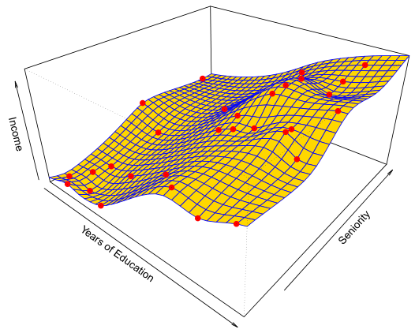
As we have seen, there are advantages and disadvantages to parametric and non-parametric methods for statistical learning. We explore both types of methods throughout this book.
2.1.3The Trade-Off Between Prediction Accuracy and Model Interpretability#
Of the many methods that we examine in this book, some are less flexible, or more restrictive, in the sense that they can produce just a relatively small range of shapes to estimate f. For example, linear regression is a relatively inflexible approach, because it can only generate linear functions such as the lines shown in Figure 2.1 or the plane shown in Figure 2.4. Other methods, such as the thin plate splines shown in Figures 2.5 and 2.6, are considerably more flexible because they can generate a much wider range of possible shapes to estimate f.
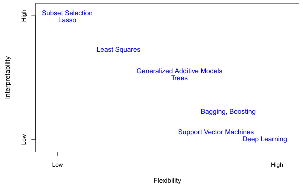
One might reasonably ask the following question: why would we ever choose to use a more restrictive method instead of a very flexible approach? There are several reasons that we might prefer a more restrictive model. If we are mainly interested in inference, then restrictive models are much more interpretable. For instance, when inference is the goal, the linear model may be a good choice since it will be quite easy to understand the relationship between Y and X1, X2,⋯, Xp. In contrast, very flexible approaches, such as the splines discussed in Chapter 7 and displayed in Figures 2.5 and 2.6, and the boosting methods discussed in Chapter 8, can lead to such complicated estimates of f that it is difficult to understand how any individual predictor is associated with the response.
Figure 2.7 provides an illustration of the trade-off between flexibility and interpretability for some of the methods that we cover in this book. Least squares linear regression, discussed in Chapter 3, is relatively inflexible but is quite interpretable. The lasso, discussed in Chapter 6, relies upon the linear model (2.4) but uses an alternative fitting procedure for estimating the coefficients β0, β1,⋯, βp. The new procedure is more restrictive in estimating the coefficients, and sets a number of them to exactly zero. Hence in this sense the lasso is a less flexible approach than linear regression. It is also more interpretable than linear regression, because in the final model the response variable will only be related to a small subset of the predictors—namely, those with nonzero coefficient estimates. Generalized additive models (GAMs), discussed in Chapter 7, instead extend the linear model (2.4) to allow for certain non-linear relationships. Consequently, GAMs are more flexible than linear regression. They are also somewhat less interpretable than linear regression, because the relationship between each predictor and the response is now modeled using a curve. Finally, fully non-linear methods such as bagging, boosting, support vector machines with non-linear kernels, and neural networks (deep learning), discussed in Chapters 8, 9, and 10, are highly flexible approaches that are harder to interpret.
We have established that when inference is the goal, there are clear advantages to using simple and relatively inflexible statistical learning methods. In some settings, however, we are only interested in prediction, and the interpretability of the predictive model is simply not of interest. For instance, if we seek to develop an algorithm to predict the price of a stock, our sole requirement for the algorithm is that it predict accurately— interpretability is not a concern. In this setting, we might expect that it will be best to use the most flexible model available. Surprisingly, this is not always the case! We will often obtain more accurate predictions using a less flexible method. This phenomenon, which may seem counterintuitive at first glance, has to do with the potential for overfitting in highly flexible methods. We saw an example of overfitting in Figure 2.6. We will discuss this very important concept further in Section 2.2 and throughout this book.
2.1.4Supervised Versus Unsupervised Learning#
Most statistical learning problems fall into one of two categories: supervised or unsupervised. The examples that we have discussed so far in this chapter all fall into the supervised learning domain. For each observation of the predictor measurement(s) xi, i = 1,⋯, n there is an associated response measurement yi. We wish to fit a model that relates the response to the predictors, with the aim of accurately predicting the response for future observations (prediction) or better understanding the relationship between the response and the predictors (inference). Many classical statistical learning methods such as linear regression and logistic regression (Chapter 4), as well as more modern approaches such as GAM, boosting, and support vector machines, operate in the supervised learning domain. The vast majority of this book is devoted to this setting.
By contrast, unsupervised learning describes the somewhat more challenging situation in which for every observation i = 1,⋯, n, we observe a vector of measurements xi but no associated response yi. It is not possible to fit a linear regression model, since there is no response variable to predict. In this setting, we are in some sense working blind; the situation is referred to as unsupervised because we lack a response variable that can supervise our analysis. What sort of statistical analysis is possible? We can seek to understand the relationships between the variables or between the observations. One statistical learning tool that we may use in this setting is cluster analysis, or clustering. The goal of cluster analysis is to ascertain, on the basis of x1,⋯, xn, whether the observations fall into relatively distinct groups. For example, in a market segmentation study we might observe multiple characteristics (variables) for potential customers, such as zip code, family income, and shopping habits. We might believe that the customers fall into different groups, such as big spenders versus low spenders. If the information about each customer’s spending patterns were available, then a supervised analysis would be possible. However, this information is not available—that is, we do not know whether each potential customer is a big spender or not. In this setting, we can try to cluster the customers on the basis of the variables measured, in order to identify distinct groups of potential customers. Identifying such groups can be of interest because it might be that the groups differ with respect to some property of interest, such as spending habits.
Many problems fall naturally into the supervised or unsupervised learning paradigms. However, sometimes the question of whether an analysis should be considered supervised or unsupervised is less clear-cut. For instance, suppose that we have a set of n observations. For m of the observations, where m < n, we have both predictor measurements and a response measurement. For the remaining n −m observations, we have predictor measurements but no response measurement. Such a scenario can arise if the predictors can be measured relatively cheaply but the corresponding responses are much more expensive to collect. We refer to this setting as a semi-supervised learning problem. In this setting, we wish to use a statistical learning method that can incorporate the m observations for which response measurements are available as well as the n −m observations for which they are not. Although this is an interesting topic, it is beyond the scope of this book.
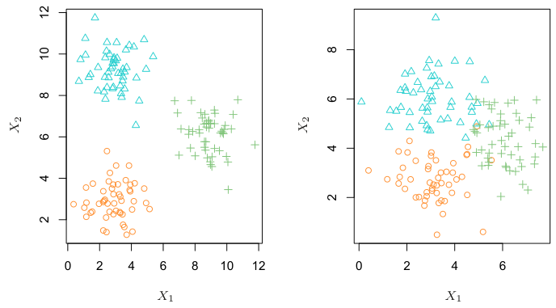
Figure 2.8 provides a simple illustration of the clustering problem. We have plotted 150 observations with measurements on two variables, X1 and X2. Each observation corresponds to one of three distinct groups. For illustrative purposes, we have plotted the members of each group using different colors and symbols. However, in practice the group memberships are unknown, and the goal is to determine the group to which each observation belongs. In the left-hand panel of Figure 2.8, this is a relatively easy task because the groups are well-separated. By contrast, the right-hand panel illustrates a more challenging setting in which there is some overlap between the groups. A clustering method could not be expected to assign all of the overlapping points to their correct group (blue, green, or orange).
In the examples shown in Figure 2.8, there are only two variables, and so one can simply visually inspect the scatterplots of the observations in order to identify clusters. However, in practice, we often encounter data sets that contain many more than two variables. In this case, we cannot easily plot the observations. For instance, if there are p variables in our data set, then p(p −1)/2 distinct scatterplots can be made, and visual inspection is simply not a viable way to identify clusters. For this reason, automated clustering methods are important. We discuss clustering and other unsupervised learning approaches in Chapter 12.
One of the key aims of this book is to introduce the reader to a wide range of statistical learning methods that extend far beyond the standard linear regression approach. Why is it necessary to introduce so many different statistical learning approaches, rather than just a single best method? There is no free lunch in statistics: no one method dominates all others over all possible data sets. On a particular data set, one specific method may work best, but some other method may work better on a similar but different data set. Hence it is an important task to decide for any given set of data which method produces the best results. Selecting the best approach can be one of the most challenging parts of performing statistical learning in practice.
2.1.5Regression Versus Classification Problems#
Variables can be characterized as either quantitative or qualitative (also known as categorical). Quantitative variables take on numerical values. Examples include a person’s age, height, or income, the value of a house, and the price of a stock. In contrast, qualitative variables take on values in one of K different classes, or categories. Examples of qualitative variables include a person’s marital status (married or not), the brand of product purchased (brand A, B, or C), whether a person defaults on a debt (yes or no), or a cancer diagnosis (Acute Myelogenous Leukemia, Acute Lymphoblastic Leukemia, or No Leukemia). We tend to refer to problems with a quantitative response as regression problems, while those involving a qualitative response are often referred to as classification problems. However, the distinction is not always that crisp. Least squares linear regression (Chapter 3) is used with a quantitative response, whereas logistic regression (Chapter 4) is typically used with a qualitative (two-class, or binary) response. Thus, despite its name, logistic regression is a classification method. But since it estimates class probabilities, it can be thought of as a regression method as well. Some statistical methods, such as K-nearest neighbors (Chapters 2 and 4) and boosting (Chapter 8), can be used in the case of either quantitative or qualitative responses.
We tend to select statistical learning methods on the basis of whether the response is quantitative or qualitative; i.e. we might use linear regression when quantitative and logistic regression when qualitative. However, whether the predictors are qualitative or quantitative is generally considered less important. Most of the statistical learning methods discussed in this book can be applied regardless of the predictor variable type, provided that any qualitative predictors are properly coded before the analysis is performed. This is discussed in Chapter 3.
2.2Assessing Model Accuracy#
In this section, we discuss some of the most important concepts that arise in selecting a statistical learning procedure for a specific data set. As the book progresses, we will explain how the concepts presented here can be applied in practice.
2.2.1Measuring the Quality of Fit#
In order to evaluate the performance of a statistical learning method on a given data set, we need some way to measure how well its predictions actually match the observed data. That is, we need to quantify the extent to which the predicted response value for a given observation is close to the true response value for that observation. In the regression setting, the most commonly-used measure is the mean squared error (MSE), given by
n 0 where f̂(xi) is the prediction that f̂ gives for the ith observation. The MSE will be small if the predicted responses are very close to the true responses, and will be large if for some of the observations, the predicted and true responses differ substantially.

The MSE in (2.5) is computed using the training data that was used to fit the model, and so should more accurately be referred to as the training MSE. But in general, we do not really care how well the method works on the training data. Rather, we are interested in the accuracy of the predictions that we obtain when we apply our method to previously unseen test data. Why is this what we care about? Suppose that we are interested in developing an algorithm to predict a stock’s price based on previous stock returns. We can train the method using stock returns from the past 6 months. But we don’t really care how well our method predicts last week’s stock price. We instead care about how well it will predict tomorrow’s price or next month’s price. On a similar note, suppose that we have clinical measurements (e.g. weight, blood pressure, height, age, family history of disease) for a number of patients, as well as information about whether each patient has diabetes. We can use these patients to train a statistical learning method to predict risk of diabetes based on clinical measurements. In practice, we want this method to accurately predict diabetes risk for future patients based on their clinical measurements. We are not very interested in whether or not the method accurately predicts diabetes risk for patients used to train the model, since we already know which of those patients have diabetes.
To state it more mathematically, suppose that we fit our statistical learning method on our training observations {(x1, y1), (x2, y2),⋯, (xn, yn)}, and we obtain the estimate f̂. We can then compute f̂(x1), f̂(x2),⋯, f̂(xn).
Figure 2.9 illustrates this phenomenon on a simple example. In the lefthand panel of Figure 2.9, we have generated observations from (2.1) with the true f given by the black curve. The orange, blue and green curves illustrate three possible estimates for f obtained using methods with increasing levels of flexibility. The orange line is the linear regression fit, which is relatively inflexible. The blue and green curves were produced using smoothing splines, discussed in Chapter 7, with different levels of smoothness. It is clear that as the level of flexibility increases, the curves fit the observed data more closely. The green curve is the most flexible and matches the data very well; however, we observe that it fits the true f (shown in black) poorly because it is too wiggly. By adjusting the level of flexibility of the smoothing spline fit, we can produce many different fits to this data.
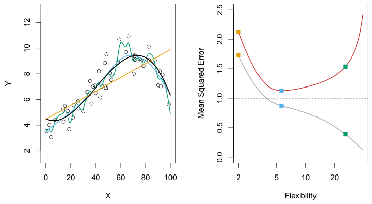
f are shown: the linear regression line (orange curve), and two smoothing spline fits (blue and green curves). Right: Training MSE (grey curve), test MSE (red curve), and minimum possible test MSE over all methods (dashed line). Squares represent the training and test MSEs for the three fits shown in the left-hand panel.
If these are approximately equal to y1, y2,⋯, yn, then the training MSE given by (2.5) is small. However, we are really not interested in whether f̂(xi) ≈yi; instead, we want to know whether f̂(x0) is approximately equal to y0, where (x0, y0) is a previously unseen test observation not used to train the statistical learning method. We want to choose the method that gives the lowest test MSE, as opposed to the lowest training MSE. In other words, if we had a large number of test observations, we could compute
Ave(y0 −f̂(x0))2,(2.6) the average squared prediction error for these test observations (x0, y0). We’d like to select the model for which this quantity is as small as possible.
How can we go about trying to select a method that minimizes the test MSE? In some settings, we may have a test data set available—that is, we may have access to a set of observations that were not used to train the statistical learning method. We can then simply evaluate (2.6) on the test observations, and select the learning method for which the test MSE is smallest. But what if no test observations are available? In that case, one might imagine simply selecting a statistical learning method that minimizes the training MSE (2.5). This seems like it might be a sensible approach, since the training MSE and the test MSE appear to be closely related. Unfortunately, there is a fundamental problem with this strategy: there is no guarantee that the method with the lowest training MSE will also have the lowest test MSE. Roughly speaking, the problem is that many statistical methods specifically estimate coefficients so as to minimize the training set MSE. For these methods, the training set MSE can be quite small, but the test MSE is often much larger.
We now move on to the right-hand panel of Figure 2.9. The grey curve displays the average training MSE as a function of flexibility, or more formally the degrees of freedom, for a number of smoothing splines. The degrees of freedom is a quantity that summarizes the flexibility of a curve; it is discussed more fully in Chapter 7. The orange, blue and green squares indicate the MSEs associated with the corresponding curves in the lefthand panel. A more restricted and hence smoother curve has fewer degrees of freedom than a wiggly curve—note that in Figure 2.9, linear regression is at the most restrictive end, with two degrees of freedom. The training MSE declines monotonically as flexibility increases. In this example the true f is non-linear, and so the orange linear fit is not flexible enough to estimate f well. The green curve has the lowest training MSE of all three methods, since it corresponds to the most flexible of the three curves fit in the left-hand panel.
In the right-hand panel of Figure 2.9, as the flexibility of the statistical learning method increases, we observe a monotone decrease in the training MSE and a U-shape in the test MSE. This is a fundamental property of statistical learning that holds regardless of the particular data set at hand and regardless of the statistical method being used. As model flexibility increases, the training MSE will decrease, but the test MSE may not. When a given method yields a small training MSE but a large test MSE, we are said to be overfitting the data. This happens because our statistical learning procedure is working too hard to find patterns in the training data, and may be picking up some patterns that are just caused by random chance rather than by true properties of the unknown function f. When we overfit the training data, the test MSE will be very large because the supposed patterns that the method found in the training data simply don’t exist in the test data. Note that regardless of whether or not overfitting has occurred, we almost always expect the training MSE to be smaller than the test MSE because most statistical learning methods either directly or indirectly seek to minimize the training MSE. Overfitting refers specifically to the case in which a less flexible model would have yielded a smaller test MSE.
In this example, we know the true function f, and so we can also compute the test MSE over a very large test set, as a function of flexibility. (Of course, in general f is unknown, so this will not be possible.) The test MSE is displayed using the red curve in the right-hand panel of Figure 2.9. As with the training MSE, the test MSE initially declines as the level of flexibility increases. However, at some point the test MSE levels off and then starts to increase again. Consequently, the orange and green curves both have high test MSE. The blue curve minimizes the test MSE, which should not be surprising given that visually it appears to estimate f the best in the left-hand panel of Figure 2.9. The horizontal dashed line indicates Var(ϵ), the irreducible error in (2.3), which corresponds to the lowest achievable test MSE among all possible methods. Hence, the smoothing spline represented by the blue curve is close to optimal.
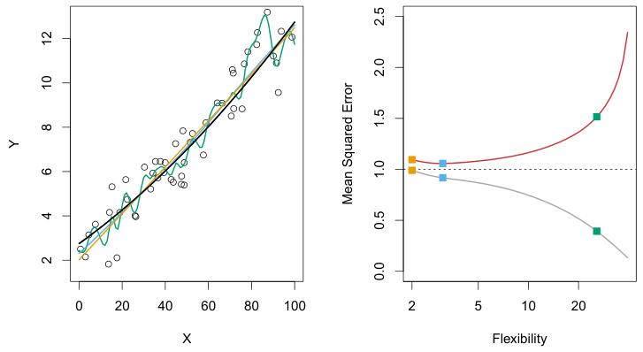
Figure 2.10 provides another example in which the true f is approximately linear. Again we observe that the training MSE decreases monotonically as the model flexibility increases, and that there is a U-shape in the test MSE. However, because the truth is close to linear, the test MSE only decreases slightly before increasing again, so that the orange least squares fit is substantially better than the highly flexible green curve. Finally, Figure 2.11 displays an example in which f is highly non-linear. The training and test MSE curves still exhibit the same general patterns, but now there is a rapid decrease in both curves before the test MSE starts to increase slowly.
In practice, one can usually compute the training MSE with relative ease, but estimating the test MSE is considerably more difficult because usually no test data are available. As the previous three examples illustrate, the flexibility level corresponding to the model with the minimal test MSE can vary considerably among data sets. Throughout this book, we discuss a variety of approaches that can be used in practice to estimate this minimum point. One important method is cross-validation (Chapter 5), which is a method for estimating the test MSE using the training data.
2.2.2The Bias-Variance Trade-Off#
The U-shape observed in the test MSE curves (Figures 2.9–2.11) turns out to be the result of two competing properties of statistical learning methods.
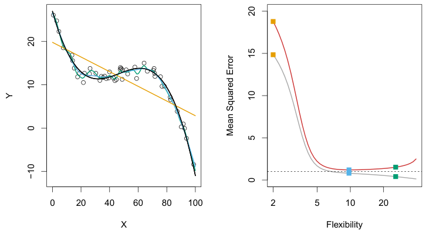
Though the mathematical proof is beyond the scope of this book, it is possible to show that the expected test MSE, for a given value x0, can always be decomposed into the sum of three fundamental quantities: the variance of f̂(x0), the squared bias of f̂(x0) and the variance of the error terms ϵ. That is,

Here the notation Ey0 −f̂(x0)
defines the expected test MSE at x0, and refers to the average test MSE that we would obtain if we repeatedly estimated f using a large number of training sets, and tested each at x0. The
1 22 overall expected test MSE can be computed by averaging Ey0 −f̂(x0) over all possible values of x0 in the test set.
Equation 2.7 tells us that in order to minimize the expected test error, we need to select a statistical learning method that simultaneously achieves low variance and low bias. Note that variance is inherently a nonnegative quantity, and squared bias is also nonnegative. Hence, we see that the expected test MSE can never lie below Var(ϵ), the irreducible error from (2.3).
What do we mean by the variance and bias of a statistical learning method? Variance refers to the amount by which f̂ would change if we estimated it using a different training data set. Since the training data are used to fit the statistical learning method, different training data sets will result in a different f̂. But ideally the estimate for f should not vary too much between training sets. However, if a method has high variance then small changes in the training data can result in large changes in f̂. In general, more flexible statistical methods have higher variance. Consider the green and orange curves in Figure 2.9. The flexible green curve is following the observations very closely. It has high variance because changing any one of these data points may cause the estimate f̂ to change considerably.
The three plots in Figure 2.12 illustrate Equation 2.7 for the examples in Figures 2.9–2.11. In each case the blue solid curve represents the squared bias, for different levels of flexibility, while the orange curve corresponds to the variance. The horizontal dashed line represents Var(ϵ), the irreducible error. Finally, the red curve, corresponding to the test set MSE, is the sum of these three quantities. In all three cases, the variance increases and the bias decreases as the method’s flexibility increases. However, the flexibility level corresponding to the optimal test MSE differs considerably among the three data sets, because the squared bias and variance change at different rates in each of the data sets. In the left-hand panel of Figure 2.12, the bias initially decreases rapidly, resulting in an initial sharp decrease in the expected test MSE. On the other hand, in the center panel of Figure 2.12 the true f is close to linear, so there is only a small decrease in bias as flexibility increases, and the test MSE only declines slightly before increasing rapidly as the variance increases. Finally, in the right-hand panel of Figure 2.12, as flexibility increases, there is a dramatic decline in bias because the true f is very non-linear. There is also very little increase in variance as flexibility increases. Consequently, the test MSE declines substantially before experiencing a small increase as model flexibility increases.
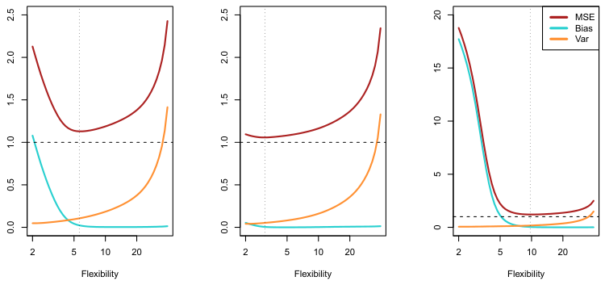
In contrast, the orange least squares line is relatively inflexible and has low variance, because moving any single observation will likely cause only a small shift in the position of the line.
On the other hand, bias refers to the error that is introduced by approximating a real-life problem, which may be extremely complicated, by a much simpler model. For example, linear regression assumes that there is a linear relationship between Y and X1, X2,⋯, Xp. It is unlikely that any real-life problem truly has such a simple linear relationship, and so performing linear regression will undoubtedly result in some bias in the estimate of f. In Figure 2.11, the true f is substantially non-linear, so no matter how many training observations we are given, it will not be possible to produce an accurate estimate using linear regression. In other words, linear regression results in high bias in this example. However, in Figure 2.10 the true f is very close to linear, and so given enough data, it should be possible for linear regression to produce an accurate estimate. Generally, more flexible methods result in less bias.
As a general rule, as we use more flexible methods, the variance will increase and the bias will decrease. The relative rate of change of these two quantities determines whether the test MSE increases or decreases. As we increase the flexibility of a class of methods, the bias tends to initially decrease faster than the variance increases. Consequently, the expected test MSE declines. However, at some point increasing flexibility has little impact on the bias but starts to significantly increase the variance. When this happens the test MSE increases. Note that we observed this pattern of decreasing test MSE followed by increasing test MSE in the right-hand panels of Figures 2.9–2.11.
Thus far, our discussion of model accuracy has been focused on the regression setting. But many of the concepts that we have encountered, such as the bias-variance trade-off, transfer over to the classification setting with only some modifications due to the fact that yi is no longer quantitative. Suppose that we seek to estimate f on the basis of training observations {(x1, y1),⋯, (xn, yn)}, where now y1,⋯, yn are qualitative. The most common approach for quantifying the accuracy of our estimate f̂ is the training error rate, the proportion of mistakes that are made if we apply our estimate f̂ to the training observations:
The relationship between bias, variance, and test set MSE given in Equation 2.7 and displayed in Figure 2.12 is referred to as the bias-variance trade-off. Good test set performance of a statistical learning method requires low variance as well as low squared bias. This is referred to as a trade-off because it is easy to obtain a method with extremely low bias but high variance (for instance, by drawing a curve that passes through every single training observation) or a method with very low variance but high bias (by fitting a horizontal line to the data). The challenge lies in finding a method for which both the variance and the squared bias are low. This trade-off is one of the most important recurring themes in this book.
In a real-life situation in which f is unobserved, it is generally not possible to explicitly compute the test MSE, bias, or variance for a statistical learning method. Nevertheless, one should always keep the bias-variance trade-off in mind. In this book we explore methods that are extremely flexible and hence can essentially eliminate bias. However, this does not guarantee that they will outperform a much simpler method such as linear regression. To take an extreme example, suppose that the true f is linear. In this situation linear regression will have no bias, making it very hard for a more flexible method to compete. In contrast, if the true f is highly non-linear and we have an ample number of training observations, then we may do better using a highly flexible approach, as in Figure 2.11. In Chapter 5 we discuss cross-validation, which is a way to estimate the test MSE using the training data.
2.2.3The Classification Setting#

Here ŷi is the predicted class label for the ith observation using f̂. And I(yi̸ = ŷi) is an indicator variable that equals 1 if yi̸ = ŷi and zero if yi = ŷi. If I(yi̸ = ŷi) = 0 then the ith observation was classified correctly by our classification method; otherwise it was misclassified. Hence Equation 2.8 computes the fraction of incorrect classifications.
Equation 2.8 is referred to as the training error rate because it is computed based on the data that was used to train our classifier. As in the regression setting, we are most interested in the error rates that result from applying our classifier to test observations that were not used in training. The test error rate associated with a set of test observations of the form (x0, y0) is given by
Ave (I(y0̸ = ŷ0)),(2.9) where ŷ0 is the predicted class label that results from applying the classifier to the test observation with predictor x0. A good classifier is one for which the test error (2.9) is smallest.
The Bayes Classifier It is possible to show (though the proof is outside of the scope of this book) that the test error rate given in (2.9) is minimized, on average, by a very simple classifier that assigns each observation to the most likely class, given its predictor values. In other words, we should simply assign a test observation with predictor vector x0 to the class j for which
Figure 2.13 provides an example using a simulated data set in a twodimensional space consisting of predictors X1 and X2. The orange and blue circles correspond to training observations that belong to two different classes. For each value of X1 and X2, there is a different probability of the response being orange or blue. Since this is simulated data, we know how the data were generated and we can calculate the conditional probabilities for each value of X1 and X2. The orange shaded region reflects the set of points for which Pr(Y = orange|X) is greater than 50%, while the blue shaded region indicates the set of points for which the probability is below 50%. The purple dashed line represents the points where the probability is exactly 50%. This is called the Bayes decision boundary. The Bayes classifier’s prediction is determined by the Bayes decision boundary; an observation that falls on the orange side of the boundary will be assigned to the orange class, and similarly an observation on the blue side of the boundary will be assigned to the blue class.

is largest. Note that (2.10) is a conditional probability: it is the probability that Y = j, given the observed predictor vector x0. This very simple classifier is called the Bayes classifier. In a two-class problem where there are only two possible response values, say class 1 or class 2, the Bayes classifier corresponds to predicting class one if Pr(Y = 1|X = x0) > 0.5, and class two otherwise.
K-Nearest Neighbors In theory we would always like to predict qualitative responses using the Bayes classifier. But for real data, we do not know the conditional distribution of Y given X, and so computing the Bayes classifier is impossible. Therefore, the Bayes classifier serves as an unattainable gold standard against which to compare other methods. Many approaches attempt to estimate the conditional distribution of Y given X, and then classify a given observation to the class with highest estimated probability. One such method is the K-nearest neighbors (KNN) classifier. Given a positive integer K and a test observation x0, the KNN classifier first identifies the K points in the training data that are closest to x0, represented by N0. It then estimates the conditional probability for class j as the fraction of points in N0 whose response values equal j:
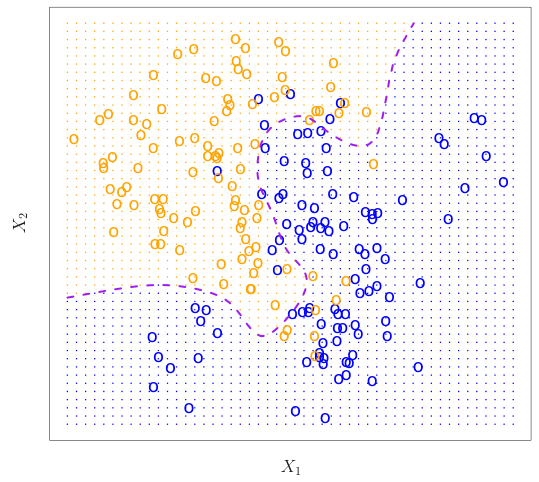
The Bayes classifier produces the lowest possible test error rate, called the Bayes error rate. Since the Bayes classifier will always choose the class for which (2.10) is largest, the error rate will be 1−maxj Pr(Y = j|X = x0) at X = x0. In general, the overall Bayes error rate is given by

where the expectation averages the probability over all possible values of X. For our simulated data, the Bayes error rate is 0.133. It is greater than zero, because the classes overlap in the true population, which implies that maxj Pr(Y = j|X = x0) < 1 for some values of x0. The Bayes error rate is analogous to the irreducible error, discussed earlier.

Finally, KNN classifies the test observation x0 to the class with the largest probability from (2.12).
Figure 2.14 provides an illustrative example of the KNN approach. In the left-hand panel, we have plotted a small training data set consisting of six blue and six orange observations. Our goal is to make a prediction for the point labeled by the black cross. Suppose that we choose K = 3. Then KNN will first identify the three observations that are closest to the cross. This neighborhood is shown as a circle. It consists of two blue points and one orange point, resulting in estimated probabilities of 2/3 for the blue class and 1/3 for the orange class. Hence KNN will predict that the black cross belongs to the blue class. In the right-hand panel of Figure 2.14 we have applied the KNN approach with K = 3 at all of the possible values for X1 and X2, and have drawn in the corresponding KNN decision boundary.
Despite the fact that it is a very simple approach, KNN can often produce classifiers that are surprisingly close to the optimal Bayes classifier. Figure 2.15 displays the KNN decision boundary, using K = 10, when applied to the larger simulated data set from Figure 2.13. Notice that even though the true distribution is not known by the KNN classifier, the KNN decision boundary is very close to that of the Bayes classifier. The test error rate using KNN is 0.1363, which is close to the Bayes error rate of 0.1304.
The choice of K has a drastic effect on the KNN classifier obtained. Figure 2.16 displays two KNN fits to the simulated data from Figure 2.13, using K = 1 and K = 100. When K = 1, the decision boundary is overly flexible and finds patterns in the data that don’t correspond to the Bayes decision boundary. This corresponds to a classifier that has low bias but very high variance. As K grows, the method becomes less flexible and produces a decision boundary that is close to linear. This corresponds to a low-variance but high-bias classifier. On this simulated data set, neither K = 1 nor K = 100 give good predictions: they have test error rates of 0.1695 and 0.1925, respectively.
Just as in the regression setting, there is not a strong relationship between the training error rate and the test error rate. With K = 1, the KNN training error rate is 0, but the test error rate may be quite high. In general, as we use more flexible classification methods, the training error rate will decline but the test error rate may not. In Figure 2.17, we have plotted the KNN test and training errors as a function of 1/K. As 1/K increases, the method becomes more flexible. As in the regression setting, the training error rate consistently declines as the flexibility increases. However, the test error exhibits a characteristic U-shape, declining at first (with a minimum at approximately K = 10) before increasing again when the method becomes excessively flexible and overfits.
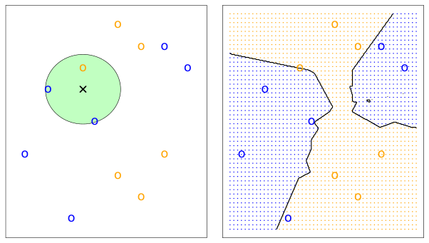
In both the regression and classification settings, choosing the correct level of flexibility is critical to the success of any statistical learning method. The bias-variance tradeoff, and the resulting U-shape in the test error, can make this a difficult task. In Chapter 5, we return to this topic and discuss K = 1, the decision boundary is overly flexible, while with K = 100 it is not sufficiently flexible. The Bayes decision boundary is shown as a purple dashed line.
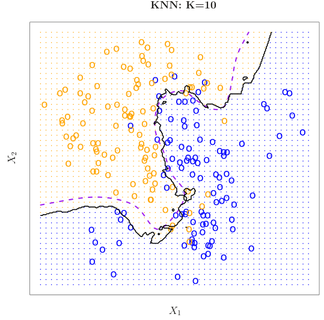
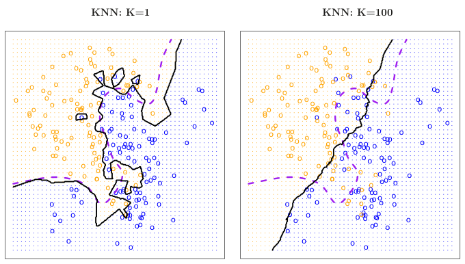
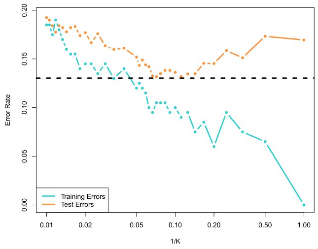
various methods for estimating test error rates and thereby choosing the optimal level of flexibility for a given statistical learning method.
2.3Lab: Introduction to Python#
2.3.1Getting Started#
To run the labs in this book, you will need two things:
1. An installation of Python3, which is the specific version of Python used in the labs.
2. Access to Jupyter, a very popular Python interface that runs code through a file called a notebook.
You can download and install Python3 by following the instructions available at anaconda.com.
There are a number of ways to get access to Jupyter. Here are just a few:
1. Using Google’s Colaboratory service: colab.research.google.com/.
2. Using JupyterHub, available at jupyter.org/hub.
3. Using your own jupyter installation. Installation instructions are available at jupyter.org/install.
Please see the Python resources page on the book website statlearning.com for up-to-date information about getting Python and Jupyter working on your computer.
You will need to install the ISLP package, which provides access to the datasets and custom-built functions that we provide. Inside a macOS or Linux terminal type pip install ISLP; this also installs most other packages needed in the labs. The Python resources page has a link to the ISLP documentation website.
To run this lab, download the file Ch2-statlearn-lab.ipynb from the Python resources page. Now run the following code at the command line:
jupyter lab Ch2-statlearn-lab.ipynb.If you’re using Windows, you can use the start menu to access anaconda, and follow the links. For example, to install ISLP and run this lab, you can run the same code above in an anaconda shell.
2.3.2Basic Commands#
In this lab, we will introduce some simple Python commands. For more resources about Python in general, readers may want to consult the tutorial at docs.python.org/3/tutorial/.
Like most programming languages, Python uses functions to perform operations. To run a function called fun, we type fun(input1,input2), where the inputs (or arguments) input1 and input2 tell Python how to run the function. A function can have any number of inputs. For example, the print() function outputs a text representation of all of its arguments to the console.
In [1]: print('fit a model with', 11, 'variables')fit a model with 11 variablesThe following command will provide information about the print() function.
In [2]: print?Adding two integers in Python is pretty intuitive.
In [3]: 3 + 5
Out[3]: 8In Python, textual data is handled using strings. For instance, "hello" and 'hello' are strings. We can concatenate them using the addition + symbol.
In [4]: "hello" + " " + "world"
Out[4]: 'hello world'A string is actually a type of sequence: this is a generic term for an ordered list. The three most important types of sequences are lists, tuples, and strings. We introduce lists now.
The following command instructs Python to join together the numbers 3, 4, and 5, and to save them as a list named x. When we type x, it gives us back the list.
In [5]: x = [3, 4, 5]
x
Out[5]: [3, 4, 5]Note that we used the brackets [] to construct this list.
We will often want to add two sets of numbers together. It is reasonable to try the following code, though it will not produce the desired results.
In [6]: y = [4, 9, 7]
x + y
Out[6]: [3, 4, 5, 4, 9, 7]The result may appear slightly counterintuitive: why did Python not add the entries of the lists element-by-element? In Python, lists hold arbitrary objects, and are added using concatenation. In fact, concatenation is the behavior that we saw earlier when we entered "hello" + " " + "world".
This example reflects the fact that Python is a general-purpose programming language. Much of Python’s data-specific functionality comes from other packages, notably numpy and pandas. In the next section, we will introduce the numpy package. See docs.scipy.org/doc/numpy/user/quickstart.html for more information about numpy.
2.3.3Introduction to Numerical Python#
As mentioned earlier, this book makes use of functionality that is contained in the numpy library, or package. A package is a collection of modules that are not necessarily included in the base Python distribution. The name numpy is an abbreviation for numerical Python.
To access numpy, we must first import it.
import
In [7]: import numpy as npIn the previous line, we named the numpy module np; an abbreviation for easier referencing.
In numpy, an array is a generic term for a multidimensional set of numbers. We use the np.array() function to define x and y, which are one-dimensional arrays, i.e. vectors.
In [8]: x = np.array([3, 4, 5])
y = np.array([4, 9, 7])Note that if you forgot to run the import numpy as np command earlier, then you will encounter an error in calling the np.array() function in the previous line. The syntax np.array() indicates that the function being called is part of the numpy package, which we have abbreviated as np.
Since x and y have been defined using np.array(), we get a sensible result when we add them together. Compare this to our results in the previous section, when we tried to add two lists without using numpy.
In [9]: x + y
Out[9]: array([ 7, 13, 12])In numpy, matrices are typically represented as two-dimensional arrays, and vectors as one-dimensional arrays.1 We can create a two-dimensional array as follows.
In [10]: x = np.array([[1, 2], [3, 4]])
x
Out[10]: array([[1, 2],
[3, 4]])The object x has several attributes, or associated objects. To access an attribute of x, we type x.attribute, where we replace attribute with the name of the attribute. For instance, we can access the ndim attribute of x as follows.
In [11]: x.ndim
Out[11]: 2The output indicates that x is a two-dimensional array. Similarly, x.dtype is the data type attribute of the object x. This indicates that x is comprised of 64-bit integers:
1While it is also possible to create matrices using np.matrix(), we will use np.array() throughout the labs in this book.
As another example, the reshape() method returns a new array with the same elements as x, but a different shape. We do this by passing in a tuple in our call to reshape(), in this case (2, 3). This tuple specifies that we would like to create a two-dimensional array with 2 rows and 3 columns.2
In [12]: x.dtype
Out[12]: dtype('int64')Why is x comprised of integers? This is because we created x by passing in exclusively integers to the np.array() function. If we had passed in any decimals, then we would have obtained an array of floating point numbers (i.e. real-valued numbers).
In [13]: np.array([[1, 2], [3.0, 4]]).dtype
Out[13]: dtype('float64')Typing fun? will cause Python to display documentation associated with the function fun, if it exists. We can try this for np.array().
In [14]: np.array?This documentation indicates that we could create a floating point array by passing a dtype argument into np.array().
dtype
In [15]: np.array([[1, 2], [3, 4]], float).dtype
Out[15]: dtype('float64')The array x is two-dimensional. We can find out the number of rows and columns by looking at its shape attribute.
shape
In [16]: x.shape
Out[16]: (2, 2)A method is a function that is associated with an object. For instance, given an array x, the expression x.sum() sums all of its elements, using the sum() method for arrays. The call x.sum() automatically provides x as the first argument to its sum() method.
In [17]: x = np.array([1, 2, 3, 4])
x.sum()
Out[17]: 10We could also sum the elements of x by passing in x as an argument to the np.sum() function.
np.sum()
In [18]: x = np.array([1, 2, 3, 4])
np.sum(x)
Out[18]: 10In what follows, the \n character creates a new line.
In [19]: x = np.array([1, 2, 3, 4, 5, 6])
print('beginning x:\n', x)
x_reshape = x.reshape((2, 3))
print('reshaped x:\n', x_reshape)
beginning x:
[1 2 3 4 5 6]
reshaped x:
[[1 2 3]
[4 5 6]]The previous output reveals that numpy arrays are specified as a sequence of rows. This is called row-major ordering, as opposed to column-major ordering.
Python (and hence numpy) uses 0-based indexing. This means that to access the top left element of x_reshape, we type in x_reshape[0,0].
In [20]: x_reshape[0, 0]
Out[20]: 1Similarly, x_reshape[1,2] yields the element in the second row and the third column of x_reshape.
In [21]: x_reshape[1, 2]
Out[21]: 6Similarly, x[2] yields the third entry of x.
Now, let’s modify the top left element of x_reshape. To our surprise, we discover that the first element of x has been modified as well!
In [22]: print('x before we modify x_reshape:\n', x)
print('x_reshape before we modify x_reshape:\n', x_reshape)
x_reshape[0, 0] = 5
print('x_reshape after we modify its top left element:\n',
x_reshape)
print('x after we modify top left element of x_reshape:\n', x)
Out[22]: x before we modify x_reshape:
[1 2 3 4 5 6]
x_reshape before we modify x_reshape:
[[1 2 3]
[4 5 6]]
x_reshape after we modify its top left element:
[[5 2 3]Throughout this book, we will often want to generate random data. The np.random.normal() function generates a vector of random normal variables. We can learn more about this function by looking at the help page, via a call to np.random.normal?. The first line of the help page reads normal(loc=0.0, scale=1.0, size=None). This signature line tells us that the function’s arguments are loc, scale, and size. These are keyword arguments, which means that when they are passed into the function, they can be referred to by name (in any order).3 By default, this function will generate random normal variable(s) with mean (loc) 0 and standard deviation (scale) 1; furthermore, a single random variable will be generated unless the argument to size is changed.
[4 5 6]]
x after we modify top left element of x_reshape:
[5 2 3 4 5 6]Modifying x_reshape also modified x because the two objects occupy the same space in memory.
We just saw that we can modify an element of an array. Can we also modify a tuple? It turns out that we cannot — and trying to do so introduces an exception, or error.
In [23]: my_tuple = (3, 4, 5)
my_tuple[0] = 2
TypeError: 'tuple' object does not support item assignmentWe now briefly mention some attributes of arrays that will come in handy. An array’s shape attribute contains its dimension; this is always a tuple. The ndim attribute yields the number of dimensions, and T provides its transpose.
In [24]: x_reshape.shape, x_reshape.ndim, x_reshape.T
Out[24]: ((2, 3),
2,
array([[5, 4],
[2, 5],
[3, 6]]))Notice that the three individual outputs (2,3), 2, and array([[5, 4],[2, 5], [3,6]]) are themselves output as a tuple.
We will often want to apply functions to arrays. For instance, we can compute the square root of the entries using the np.sqrt() function:
np.sqrt()
In [25]: np.sqrt(x)
Out[25]: array([2.24, 1.41, 1.73, 2., 2.24, 2.45])We can also square the elements:
In [26]: x**2
Out[26]: array([25, 4, 9, 16, 25, 36])We can compute the square roots using the same notation, raising to the power of 1/2 instead of 2.
In [27]: x**0.5
Out[27]: array([2.24, 1.41, 1.73, 2., 2.24, 2.45])normal()We now generate 50 independent random variables from a N(0, 1) distribution.
In [28]: x = np.random.normal(size=50)
x
Out[28]: array([-1.19,0.41,0.9 , -0.44, -0.9 , -0.38,0.13,1.87,
-0.35,1.16,0.79, -0.97, -1.21,0.06, -1.62, -0.6 ,
-0.77, -2.12,0.38, -1.22, -0.06, -1.97, -1.74, -0.56,
1.7 , -0.95,0.56,0.35,0.87,0.88, -1.66, -0.32,
-0.3 , -1.36,0.92, -0.31,1.28, -1.94,1.07,0.07,
0.79, -0.46,2.19, -0.27, -0.64,0.85,0.13,0.46,
-0.09,0.7 ])We create an array y by adding an independent N(50, 1) random variable to each element of x.
In [29]: y = x + np.random.normal(loc=50, scale=1, size=50)The np.corrcoef() function computes the correlation matrix between x and y. The off-diagonal elements give the correlation between x and y.
In [30]: np.corrcoef(x, y)
Out[30]: array([[1., 0.69],
[0.69, 1.]])If you’re following along in your own Jupyter notebook, then you probably noticed that you got a different set of results when you ran the past few commands. In particular, each time we call np.random.normal(), we will get a different answer, as shown in the following example.
In [31]: print(np.random.normal(scale=5, size=2))
print(np.random.normal(scale=5, size=2))
Out[31]: [4.28 2.59]
[4.62 -2.54]In order to ensure that our code provides exactly the same results each time it is run, we can set a random seed using the np.random.default_rng() function. This function takes an arbitrary, user-specified integer argument. If we set a random seed before generating random data, then re-running our code will yield the same results. The object rng has essentially all the
np.random.3Python also uses positional arguments. Positional arguments do not need to use a keyword. To see an example, type in np.sum?. We see that a is a positional argument,
to be summed. By contrast, axis and dtype are keyword arguments: the position in which these arguments are entered into np.sum() does not matter.
random number generating methods found in np.random. Hence, to generate normal data we use rng.normal().
In [32]: rng = np.random.default_rng(1303)
print(rng.normal(scale=5, size=2))
rng2 = np.random.default_rng(1303)
print(rng2.normal(scale=5, size=2))
Out[32]: [4.09-1.07 ]
[4.09-1.07 ]Throughout the labs in this book, we use np.random.default_rng() whenever we perform calculations involving random quantities within numpy. In principle, this should enable the reader to exactly reproduce the stated results. However, as new versions of numpy become available, it is possible that some small discrepancies may occur between the output in the labs and the output from numpy.
The np.mean(), np.var(), and np.std() functions can be used to compute the mean, variance, and standard deviation of arrays. These functions are also available as methods on the arrays.
np.var()np.std()
In [33]: rng = np.random.default_rng(3)
y = rng.standard_normal(10)
np.mean(y), y.mean()
Out[33]: (-0.11, -0.11)
In [34]: np.var(y), y.var(), np.mean((y - y.mean())**2)
Out[34]: (2.72, 2.72, 2.72)Notice that by default np.var() divides by the sample size n rather than n −1; see the ddof argument in np.var?.
In [35]: np.sqrt(np.var(y)), np.std(y)
Out[35]: (1.65, 1.65)The np.mean(), np.var(), and np.std() functions can also be applied to the rows and columns of a matrix. To see this, we construct a 10 × 3 matrix of N(0, 1) random variables, and consider computing its row sums.
In [36]: X = rng.standard_normal((10, 3))
X
Out[36]: array([[ 0.23, -0.35, -0.28],
[-0.67, -1.06, -0.39],
[ 0.48, -0.24,0.96],
[-0.2 ,0.02,1.55],
[ 0.55, -0.51, -0.18],
[ 0.54,1.94, -0.27],
[-0.24,1., -0.89],
[-0.29,0.88,0.58],
[ 0.09,0.67, -2.83],
[ 1.02, -0.96, -1.67]])Since arrays are row-major ordered, the first axis, i.e. axis=0, refers to its rows. We pass this argument into the mean() method for the object X.
.mean()
In [37]: X.mean(axis=0)
Out[37]: array([0.15, 0.14, -0.34])The following yields the same result.
In [38]: X.mean(0)
Out[38]: array([0.15, 0.14, -0.34])2.3.4Graphics#
In Python, common practice is to use the library matplotlib for graphics. However, since Python was not written with data analysis in mind, the notion of plotting is not intrinsic to the language. We will use the subplots() function from matplotlib.pyplot to create a figure and the axes onto which we plot our data. For many more examples of how to make plots in Python, readers are encouraged to visit matplotlib.org/stable/gallery/.
In matplotlib, a plot consists of a figure and one or more axes. You can think of the figure as the blank canvas upon which one or more plots will be displayed: it is the entire plotting window. The axes contain important information about each plot, such as its x- and y-axis labels, title, and more. (Note that in matplotlib, the word axes is not the plural of axis: a plot’s axes contains much more information than just the x-axis and the y-axis.)
We begin by importing the subplots() function from matplotlib. We use this function throughout when creating figures. The function returns a tuple of length two: a figure object as well as the relevant axes object. We will typically pass figsize as a keyword argument. Having created our axes, we attempt our first plot using its plot() method. To learn more about it, type ax.plot?.
In [39]: from matplotlib.pyplot import subplots
fig, ax = subplots(figsize=(8, 8))
x = rng.standard_normal(100)
y = rng.standard_normal(100)
ax.plot(x, y);We pause here to note that we have unpacked the tuple of length two returned by subplots() into the two distinct variables fig and ax. Unpacking is typically preferred to the following equivalent but slightly more verbose code:
In [40]: output = subplots(figsize=(8, 8))
fig = output[0]
ax = output[1]We see that our earlier cell produced a line plot, which is the default. To create a scatterplot, we provide an additional argument to ax.plot(), indicating that circles should be displayed.
In [41]: fig, ax = subplots(figsize=(8, 8))
ax.plot(x, y, 'o');Different values of this additional argument can be used to produce different colored lines as well as different linestyles.
As an alternative, we could use the ax.scatter() function to create a scatterplot.
In [42]: fig, ax = subplots(figsize=(8, 8))
ax.scatter(x, y, marker='o');Notice that in the code blocks above, we have ended the last line with a semicolon. This prevents ax.plot(x, y) from printing text to the notebook. However, it does not prevent a plot from being produced. If we omit the trailing semi-colon, then we obtain the following output:
In [43]: fig, ax = subplots(figsize=(8, 8))
ax.scatter(x, y, marker='o')
Out[43]: <matplotlib.collections.PathCollection at 0x7fb3d9c8f310 >
Figure(432x288)In what follows, we will use trailing semicolons whenever the text that would be output is not germane to the discussion at hand.
To label our plot, we make use of the set_xlabel(), set_ylabel(), and set_title() methods of ax.
.set_ylabel()
In [44]: fig, ax = subplots(figsize=(8, 8)).set_title()
ax.scatter(x, y, marker='o')
ax.set_xlabel("this is the x-axis")
ax.set_ylabel("this is the y-axis")
ax.set_title("Plot of X vs Y");Having access to the figure object fig itself means that we can go in and change some aspects and then redisplay it. Here, we change the size from
(8, 8) to (12, 3).
fig.set_size_inches(12,3)
figOccasionally we will want to create several plots within a figure. This can be achieved by passing additional arguments to subplots(). Below, we create a 2 × 3 grid of plots in a figure of size determined by the figsize argument. In such situations, there is often a relationship between the axes in the plots. For example, all plots may have a common x-axis. The subplots() function can automatically handle this situation when passed the keyword argument sharex=True. The axes object below is an array pointing to different plots in the figure.
In [45]: fig, axes = subplots(nrows=2,
ncols=3,
figsize=(15, 5))We now produce a scatter plot with 'o' in the second column of the first row and a scatter plot with '+' in the third column of the second row.
In [46]: axes[0,1].plot(x, y, 'o')
axes[1,2].scatter(x, y, marker='+')
figType subplots? to learn more about subplots().
To save the output of fig, we call its savefig() method. The argument dpi is the dots per inch, used to determine how large the figure will be in pixels.
In [47]: fig.savefig("Figure.png", dpi=400)
fig.savefig("Figure.pdf", dpi=200);We can continue to modify fig using step-by-step updates; for example, we can modify the range of the x-axis, re-save the figure, and even re-display it.
In [48]: axes[0,1].set_xlim([-1,1])
fig.savefig("Figure_updated.jpg")
figWe now create some more sophisticated plots. The ax.contour() method produces a contour plot in order to represent three-dimensional data, similar to a topographical map. It takes three arguments:
- A vector of
xvalues (the first dimension),
- A vector of
yvalues (the second dimension), and
- A matrix whose elements correspond to the
zvalue (the third dimension) for each pair of(x,y)coordinates.
np.linspace(a, b, n), which np.linspace()To create x and y, we’ll use the command returns a vector of n numbers starting at a and ending at b.
In [49]: fig, ax = subplots(figsize=(8, 8))
x = np.linspace(-np.pi, np.pi, 50)
y = x
f = np.multiply.outer(np.cos(y), 1 / (1 + x**2))
ax.contour(x, y, f);We can increase the resolution by adding more levels to the image.
In [50]: fig, ax = subplots(figsize=(8, 8))
ax.contour(x, y, f, levels=45);To fine-tune the output of the ax.contour() function, take a look at the help file by typing ?plt.contour.
The ax.imshow() method is similar to ax.contour(), except that it produces a color-coded plot whose colors depend on the z value. This is known as a heatmap, and is sometimes used to plot temperature in weather forecasts.
In [51]: fig, ax = subplots(figsize=(8, 8))
ax.imshow(f);2.3.5Sequences and Slice Notation#
As seen above, the function np.linspace() can be used to create a sequence of numbers.
In [52]: seq1 = np.linspace(0, 10, 11)
seq1
Out[52]: array([ 0.,1.,2.,3.,4.,5.,6.,7.,8.,9., 10.])The function np.arange() returns a sequence of numbers spaced out by step. If step is not specified, then a default value of 1 is used. Let’s create a sequence that starts at 0 and ends at 10.
In [53]: seq2 = np.arange(0, 10)
seq2
Out[53]: array([0, 1, 2, 3, 4, 5, 6, 7, 8, 9])Why isn’t 10 output above? This has to do with slice notation in Python. Slice notation is used to index sequences such as lists, tuples and arrays. Suppose we want to retrieve the fourth through sixth (inclusive) entries of a string. We obtain a slice of the string using the indexing notation [3:6].
In [54]: "hello world"[3:6]
Out[54]: 'lo 'In the code block above, the notation 3:6 is shorthand for slice(3,6) when used inside [].
In [55]: "hello world"[slice(3,6)]
Out[55]: 'lo 'You might have expected slice(3,6) to output the fourth through seventh characters in the text string (recalling that Python begins its indexing at zero), but instead it output the fourth through sixth. This also explains why the earlier np.arange(0, 10) command output only the integers from 0 to 9. See the documentation slice? for useful options in creating slices.
2.3.6Indexing Data#
To begin, we create a two-dimensional numpy array.
In [56]: A = np.array(np.arange(16)).reshape((4, 4))
A
Out[56]: array([[ 0,1,2,3],
[ 4,5,6,7],
[ 8,9, 10, 11],
[12, 13, 14, 15]])Typing A[1,2] retrieves the element corresponding to the second row and third column. (As usual, Python indexes from 0.)
In [57]: A[1,2]
Out[57]: 6The first number after the open-bracket symbol [ refers to the row, and the second number refers to the column.
Indexing Rows, Columns, and Submatrices To select multiple rows at a time, we can pass in a list specifying our selection. For instance, [1,3] will retrieve the second and fourth rows:
In [58]: A[[1,3]]
Out[58]: array([[ 4,5,6,7],
[12, 13, 14, 15]])To select the first and third columns, we pass in [0,2] as the second argument in the square brackets. In this case we need to supply the first argument : which selects all rows.
In [59]: A[:,[0,2]]
Out[59]: array([[ 0,2],
[ 4,6],
[ 8, 10],
[12, 14]])Now, suppose that we want to select the submatrix made up of the second and fourth rows as well as the first and third columns. This is where indexing gets slightly tricky. It is natural to try to use lists to retrieve the rows and columns:
In [60]: A[[1,3],[0,2]]
Out[60]: array([ 4, 14])Oops — what happened? We got a one-dimensional array of length two identical to
In [61]: np.array([A[1,0],A[3,2]])
Out[61]: array([ 4, 14])Similarly, the following code fails to extract the submatrix comprised of the second and fourth rows and the first, third, and fourth columns:
In [62]: A[[1,3],[0,2,3]]
IndexError: shape mismatch: indexing arrays could not be broadcast
together with shapes (2,) (3,)We can see what has gone wrong here. When supplied with two indexing lists, the numpy interpretation is that these provide pairs of i, j indices for a series of entries. That is why the pair of lists must have the same length. However, that was not our intent, since we are looking for a submatrix.
One easy way to do this is as follows. We first create a submatrix by subsetting the rows of A, and then on the fly we make a further submatrix by subsetting its columns.
In [63]: A[[1,3]][:,[0,2]]
Out[63]: array([[ 4,6],
[12, 14]])There are more efficient ways of achieving the same result. The convenience function np.ix_() allows us to extract a submatrix using lists, by creating an intermediate mesh object.
np.ix_()
In [64]: idx = np.ix_([1,3],[0,2,3])
A[idx]mesh
Out[64]: array([[ 4,6,7],
[12, 14, 15]])Alternatively, we can subset matrices efficiently using slices. The slice 1:4:2 captures the second and fourth items of a sequence, while the slice 0:3:2 captures the first and third items (the third element in a slice sequence is the step size).
In [65]: A[1:4:2,0:3:2]
Out[65]: array([[ 4,6],
[12, 14]])Why are we able to retrieve a submatrix directly using slices but not using lists? Its because they are different Python types, and are treated differently by numpy. Slices can be used to extract objects from arbitrary sequences, such as strings, lists, and tuples, while the use of lists for indexing is more limited.
Boolean Indexing In numpy, a Boolean is a type that equals either True or False (also represented as 1 and 0, respectively). The next line creates a vector of 0’s, represented as Booleans, of length equal to the first dimension of A.
In [66]: keep_rows = np.zeros(A.shape[0], bool)
keep_rows
Out[66]: array([False,False, False,False])We now set two of the elements to True.
In [67]: keep_rows[[1,3]] = True
keep_rowsOut[67]: array([False,True, False,True])Note that the elements of keep_rows, when viewed as integers, are the same as the values of np.array([0,1,0,1]). Below, we use == to verify their equality. When applied to two arrays, the == operation is applied elementwise.
In [68]: np.all(keep_rows == np.array([0,1,0,1]))
Out[68]: True(Here, the function np.all() has checked whether all entries of an array are True. A similar function, np.any(), can be used to check whether any entries of an array are True.)
However, even though np.array([0,1,0,1]) and keep_rows are equal according to ==, they index different sets of rows! The former retrieves the first, second, first, and second rows of A.
In [69]: A[np.array([0,1,0,1])]
Out[69]: array([[0, 1, 2, 3],
[4, 5, 6, 7],
[0, 1, 2, 3],
[4, 5, 6, 7]])By contrast, keep_rows retrieves only the second and fourth rows of A — i.e. the rows for which the Boolean equals TRUE.
In [70]: A[keep_rows]
Out[70]: array([[ 4,5,6,7],
[12, 13, 14, 15]])This example shows that Booleans and integers are treated differently by
numpy.We again make use of the np.ix_() function to create a mesh containing the second and fourth rows, and the first, third, and fourth columns. This time, we apply the function to Booleans, rather than lists.
In [71]: keep_cols = np.zeros(A.shape[1], bool)
keep_cols[[0, 2, 3]] = True
idx_bool = np.ix_(keep_rows, keep_cols)
A[idx_bool]
Out[71]: array([[ 4,6, 7],
[12, 14, 15]])We can also mix a list with an array of Booleans in the arguments to
np.ix_():
In [72]: idx_mixed = np.ix_([1,3], keep_cols)
A[idx_mixed]
Out[72]: array([[ 4,6, 7],
[12, 14, 15]])For more details on indexing in numpy, readers are referred to the numpy tutorial mentioned earlier.
2.3.7Loading Data#
Data sets often contain different types of data, and may have names associated with the rows or columns. For these reasons, they typically are best accommodated using a data frame. We can think of a data frame as a sequence of arrays of identical length; these are the columns. Entries in the different arrays can be combined to form a row. The pandas library can be used to create and work with data frame objects.
Reading in a Data Set The first step of most analyses involves importing a data set into Python. Before attempting to load a data set, we must make sure that Python knows where to find the file containing it. If the file is in the same location as this notebook file, then we are all set. Otherwise, the command os.chdir() can be used to change directory. (You will need to call import os before calling
os.chdir().)We will begin by reading in Auto.csv, available on the book website. This is a comma-separated file, and can be read in using pd.read_csv():
pd.read_csv()
In [73]: import pandas as pd
Auto = pd.read_csv('Auto.csv')
AutoThe book website also has a whitespace-delimited version of this data, called Auto.data. This can be read in as follows:
In [74]: Auto = pd.read_csv('Auto.data', delim_whitespace=True)Both Auto.csv and Auto.data are simply text files. Before loading data into Python, it is a good idea to view it using a text editor or other software, such as Microsoft Excel.
We now take a look at the column of Auto corresponding to the variable
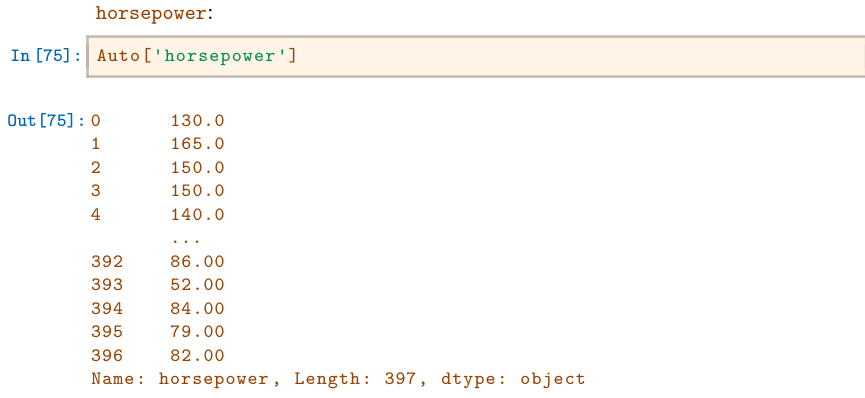
We see that the dtype of this column is object. It turns out that all values of the horsepower column were interpreted as strings when reading in the data. We can find out why by looking at the unique values.
In [76]: np.unique(Auto['horsepower'])To save space, we have omitted the output of the previous code block. We see the culprit is the value ?, which is being used to encode missing values.
To fix the problem, we must provide pd.read_csv() with an argument called na_values. Now, each instance of ? in the file is replaced with the value np.nan, which means not a number:
In [77]: Auto = pd.read_csv('Auto.data',
na_values=['?'],
delim_whitespace=True)
Auto['horsepower'].sum()
Out[77]: 40952.0The Auto.shape attribute tells us that the data has 397 observations, or rows, and nine variables, or columns.
In [78]: Auto.shape
Out[78]: (397, 9)There are various ways to deal with missing data. In this case, since only five of the rows contain missing observations, we choose to use the Auto.dropna() method to simply remove these rows.
.dropna()
In [79]: Auto_new = Auto.dropna()
Auto_new.shape
Out[79]: (392, 9)Basics of Selecting Rows and Columns We can use Auto.columns to check the variable names.
In [80]: Auto = Auto_new # overwrite the previous value
Auto.columns
Out[80]: Index(['mpg', 'cylinders', 'displacement', 'horsepower',
'weight', 'acceleration', 'year', 'origin', 'name'],
dtype='object')Accessing the rows and columns of a data frame is similar, but not identical, to accessing the rows and columns of an array. Recall that the first argument to the [] method is always applied to the rows of the array. Similarly, passing in a slice to the [] method creates a data frame whose rows are determined by the slice:
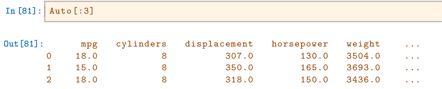
Similarly, an array of Booleans can be used to subset the rows:
In [82]: idx_80 = Auto['year'] > 80
Auto[idx_80]However, if we pass in a list of strings to the [] method, then we obtain a data frame containing the corresponding set of columns.
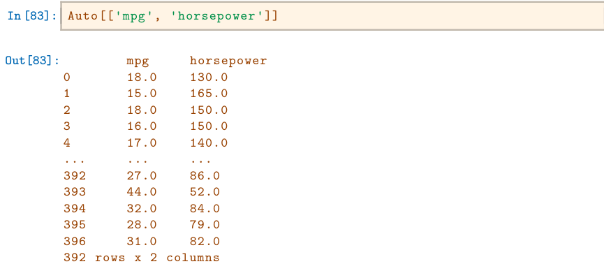
Since we did not specify an index column when we loaded our data frame, the rows are labeled using integers 0 to 396.
In [84]: Auto.index
Out[84]: Int64Index([0,1,2,3,4,5,6,7,8,9,
⋯
387, 388, 389, 390, 391, 392, 393, 394, 395, 396],
dtype='int64', length=392)We can use the set_index() method to re-name the rows using the contents
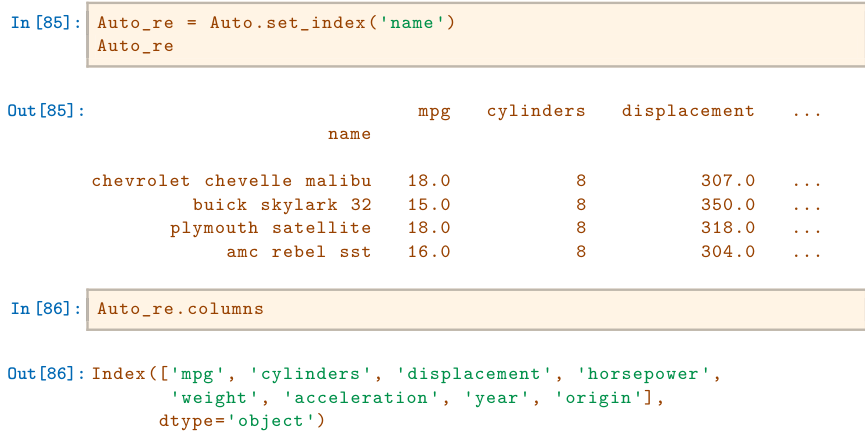
We see that the column 'name' is no longer there.
Now that the index has been set to name, we can access rows of the data frame by name using the loc[] method of Auto:
.loc[]The lambda call creates a function that takes a single argument, here df, and returns df['year']>80. Since it is created inside the loc[] method for the dataframe Auto_re, that dataframe will be the argument supplied. As another example of using a lambda, suppose that we want all cars built after 1980 that achieve greater than 30 miles per gallon:
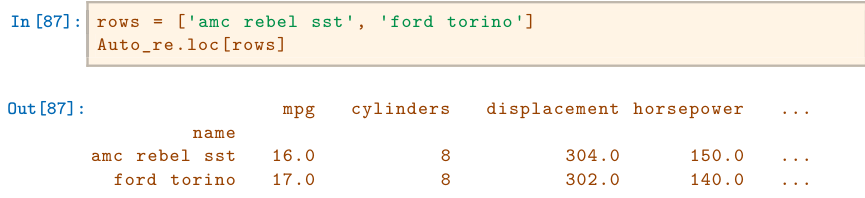
As an alternative to using the index name, we could retrieve the 4th and 5th rows of Auto using the iloc[] method:
.iloc[]
In [88]: Auto_re.iloc[[3,4]]We can also use it to retrieve the 1st, 3rd and and 4th columns of Auto_re:
In [89]: Auto_re.iloc[:,[0,2,3]]We can extract the 4th and 5th rows, as well as the 1st, 3rd and 4th columns, using a single call to iloc[]:
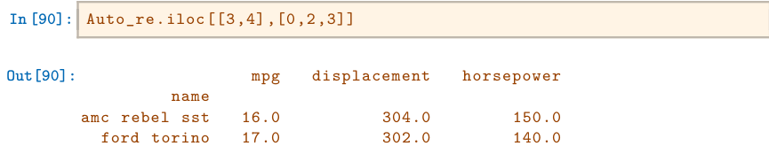
Index entries need not be unique: there are several cars in the data frame
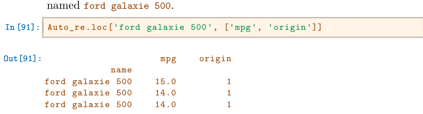
More on Selecting Rows and Columns Suppose now that we want to create a data frame consisting of the weight and origin of the subset of cars with year greater than 80 — i.e. those built after 1980. To do this, we first create a Boolean array that indexes the rows. The loc[] method allows for Boolean entries as well as strings:
In [92]: idx_80 = Auto_re['year'] > 80
Auto_re.loc[idx_80, ['weight', 'origin']]To do this more concisely, we can use an anonymous function called a
lambda:
lambda
In [93]: Auto_re.loc[lambda df: df['year'] > 80, ['weight', 'origin']]In [94]: Auto_re.loc[lambda df: (df['year'] > 80) & (df['mpg'] > 30),
['weight', 'origin']
]The symbol & computes an element-wise and operation. As another example, suppose that we want to retrieve all Ford and Datsun cars with displacement less than 300. We check whether each name entry contains either the string ford or datsun using the str.contains() method of the index attribute of of the dataframe:
contains()
In [95]: Auto_re.loc[lambda df: (df['displacement'] < 300)
& (df.index.str.contains('ford')
| df.index.str.contains('datsun')),
['weight', 'origin']
]Here, the symbol | computes an element-wise or operation.
In summary, a powerful set of operations is available to index the rows and columns of data frames. For integer based queries, use the iloc[] method. For string and Boolean selections, use the loc[] method. For functional queries that filter rows, use the loc[] method with a function (typically a lambda) in the rows argument.
2.3.8For Loops#
A for loop is a standard tool in many languages that repeatedly evaluates some chunk of code while varying different values inside the code. For example, suppose we loop over elements of a list and compute their sum.
In [96]: total = 0
for value in [3,2,19]:
total += value
print('Total is: {0}'.format(total))
Total is: 24The indented code beneath the line with the for statement is run for each value in the sequence specified in the for statement. The loop ends either when the cell ends or when code is indented at the same level as the original for statement. We see that the final line above which prints the total is executed only once after the for loop has terminated. Loops can be nested by additional indentation.
In [97]: total = 0
for value in [2,3,19]:
for weight in [3, 2, 1]:
total += value * weight
print('Total is: {0}'.format(total))
Total is: 144Above, we summed over each combination of value and weight. We also took advantage of the increment notation in Python: the expression a += b is equivalent to a = a + b. Besides being a convenient notation, this can save time in computationally heavy tasks in which the intermediate value of a+b need not be explicitly created.
Perhaps a more common task would be to sum over (value, weight) pairs. For instance, to compute the average value of a random variable that takes on possible values 2, 3 or 19 with probability 0.2, 0.3, 0.5 respectively we would compute the weighted sum. Tasks such as this can often be accomplished using the zip() function that loops over a sequence of tuples.
In [98]: total = 0
for value, weight in zip([2,3,19],
[0.2,0.3,0.5]):
total += weight * value
print('Weighted average is: {0}'.format(total))
Weighted average is: 10.8String Formatting In the code chunk above we also printed a string displaying the total. However, the object total is an integer and not a string. Inserting the value of something into a string is a common task, made simple using some of the powerful string formatting tools in Python. Many data cleaning tasks involve manipulating and programmatically producing strings.
For example we may want to loop over the columns of a data frame and print the percent missing in each column. Let’s create a data frame D with columns in which 20% of the entries are missing i.e. set to np.nan. We’ll create the values in D from a normal distribution with mean 0 and variance 1 using rng.standard_normal() and then overwrite some random entries using rng.choice().
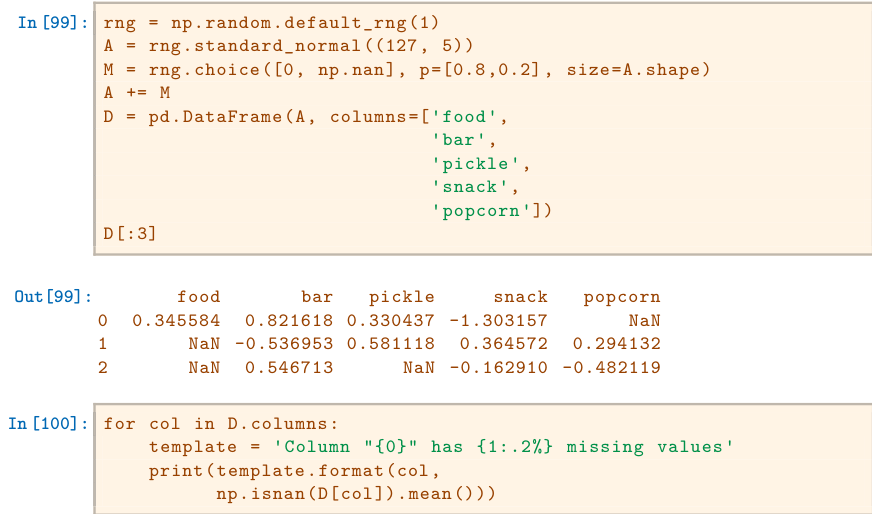
Column "food" has 16.54% missing values
Column "bar" has 25.98% missing values
Column "pickle" has 29.13% missing values
Column "snack" has 21.26% missing values
Column "popcorn" has 22.83% missing valuesWe see that the template.format() method expects two arguments {0} and {1:.2%}, and the latter includes some formatting information. In particular, it specifies that the second argument should be expressed as a percent with two decimal digits.
The reference docs.python.org/3/library/string.html includes many helpful and more complex examples.
2.3.9Additional Graphical and Numerical Summaries#
We can use the ax.plot() or ax.scatter() functions to display the quantitative variables. However, simply typing the variable names will produce an error message, because Python does not know to look in the Auto data set for those variables.
In [101]: fig, ax = subplots(figsize=(8, 8))
ax.plot(horsepower, mpg, 'o');
NameError: name 'horsepower' is not definedWe can address this by accessing the columns directly:
In [102]: fig, ax = subplots(figsize=(8, 8))
ax.plot(Auto['horsepower'], Auto['mpg'], 'o');Alternatively, we can use the plot() method with the call Auto.plot(). Using this method, the variables can be accessed by name. The plot methods of a data frame return a familiar object: an axes. We can use it to update the plot as we did previously:
In [103]: ax = Auto.plot.scatter('horsepower', 'mpg');
ax.set_title('Horsepower vs. MPG')If we want to save the figure that contains a given axes, we can find the relevant figure by accessing the figure attribute:
In [104]: fig = ax.figure
fig.savefig('horsepower_mpg.png');We can further instruct the data frame to plot to a particular axes object. In this case the corresponding plot() method will return the modified axes we passed in as an argument. Note that when we request a one-dimensional grid of plots, the object axes is similarly one-dimensional. We place our scatter plot in the middle plot of a row of three plots within a figure.
In [105]: fig, axes = subplots(ncols=3, figsize=(15, 5))
Auto.plot.scatter('horsepower', 'mpg', ax=axes[1]);Note also that the columns of a data frame can be accessed as attributes: try typing in Auto.horsepower.
We now consider the cylinders variable. Typing in Auto.cylinders.dtype reveals that it is being treated as a quantitative variable. However, since there is only a small number of possible values for this variable, we may wish to treat it as qualitative. Below, we replace the cylinders column with a categorical version of Auto.cylinders. The function pd.Series() owes its name to the fact that pandas is often used in time series applications.
In [106]: Auto.cylinders = pd.Series(Auto.cylinders, dtype='category')
Auto.cylinders.dtypeNow that cylinders is qualitative, we can display it using the boxplot() method.
In [107]: fig, ax = subplots(figsize=(8, 8))
Auto.boxplot('mpg', by='cylinders', ax=ax);The hist() method can be used to plot a histogram.
.hist()
In [108]: fig, ax = subplots(figsize=(8, 8))
Auto.hist('mpg', ax=ax);The color of the bars and the number of bins can be changed:
In [109]: fig, ax = subplots(figsize=(8, 8))
Auto.hist('mpg', color='red', bins=12, ax=ax);See Auto.hist? for more plotting options.
We can use the pd.plotting.scatter_matrix() function to create a scatterplot matrix to visualize all of the pairwise relationships between the columns in a data frame.
scatter_In [110]: pd.plotting.scatter_matrix(Auto);We can also produce scatterplots for a subset of the variables.
In [111]: pd.plotting.scatter_matrix(Auto[['mpg',
'displacement',
'weight']]);The describe() method produces a numerical summary of each column in a data frame.
In [112]: Auto[['mpg', 'weight']].describe()We can also produce a summary of just a single column.
In [113]: Auto['cylinders'].describe()
Auto['mpg'].describe()
To exit Jupyter, select File / Close and Halt.2.4Exercises#
Conceptual#
For each of parts (a) through (d), indicate whether we would generally expect the performance of a flexible statistical learning method to be better or worse than an inflexible method. Justify your answer.
- The sample size n is extremely large, and the number of predictors p is small.
- The number of predictors p is extremely large, and the number of observations n is small.
- The relationship between the predictors and response is highly non-linear.
- The variance of the error terms, i.e. σ2 = Var(ϵ), is extremely high.
Explain whether each scenario is a classification or regression problem, and indicate whether we are most interested in inference or prediction. Finally, provide n and p.
- We collect a set of data on the top 500 firms in the US. For each firm we record profit, number of employees, industry and the CEO salary. We are interested in understanding which factors affect CEO salary.
- We are considering launching a new product and wish to know whether it will be a success or a failure. We collect data on 20 similar products that were previously launched. For each product we have recorded whether it was a success or failure, price charged for the product, marketing budget, competition price, and ten other variables.
- We are interested in predicting the % change in the USD/Euro exchange rate in relation to the weekly changes in the world stock markets. Hence we collect weekly data for all of 2012. For each week we record the % change in the USD/Euro, the % change in the US market, the % change in the British market, and the % change in the German market.
We now revisit the bias-variance decomposition.
- Provide a sketch of typical (squared) bias, variance, training error, test error, and Bayes (or irreducible) error curves, on a single plot, as we go from less flexible statistical learning methods towards more flexible approaches. The x-axis should represent the amount of flexibility in the method, and the y-axis should represent the values for each curve. There should be five curves. Make sure to label each one.
- Explain why each of the five curves has the shape displayed in part (a).
You will now think of some real-life applications for statistical learning.
- Describe three real-life applications in which classification might be useful. Describe the response, as well as the predictors. Is the goal of each application inference or prediction? Explain your answer.
- Describe three real-life applications in which regression might be useful. Describe the response, as well as the predictors. Is the goal of each application inference or prediction? Explain your answer.
- Describe three real-life applications in which cluster analysis might be useful.
What are the advantages and disadvantages of a very flexible (versus a less flexible) approach for regression or classification? Under what circumstances might a more flexible approach be preferred to a less flexible approach? When might a less flexible approach be preferred?
Describe the differences between a parametric and a non-parametric statistical learning approach. What are the advantages of a parametric approach to regression or classification (as opposed to a nonparametric approach)? What are its disadvantages?
The table below provides a training data set containing six observations, three predictors, and one qualitative response variable.
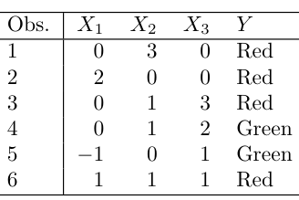
Suppose we wish to use this data set to make a prediction for Y when X1 = X2 = X3 = 0 using K-nearest neighbors.
- Compute the Euclidean distance between each observation and the test point, X1 = X2 = X3 = 0.
- What is our prediction with K = 1? Why?
- What is our prediction with K = 3? Why?
- If the Bayes decision boundary in this problem is highly nonlinear, then would we expect the best value for K to be large or small? Why?
Applied#
This exercise relates to the
Collegedata set, which can be found in the fileCollege.csvon the book website. It contains a number of variables for 777 different universities and colleges in the US. The variables are
Private: Public/private indicator
Apps: Number of applications received
Accept: Number of applicants accepted
Enroll: Number of new students enrolled
Top10perc: New students from top 10% of high school class
Top25perc: New students from top 25% of high school class
F.Undergrad: Number of full-time undergraduates
P.Undergrad: Number of part-time undergraduates
Outstate: Out-of-state tuition
Room.Board: Room and board costs
Books: Estimated book costs
Personal: Estimated personal spending
PhD: Percent of faculty with Ph.D.s
Terminal: Percent of faculty with terminal degree
S.F.Ratio: Student/faculty ratio
perc.alumni: Percent of alumni who donate
Expend: Instructional expenditure per student
Grad.Rate: Graduation rate
Before reading the data into Python, it can be viewed in Excel or a text editor.
- Use the
pd.read_csv()function to read the data intoPython. Call the loaded datacollege. Make sure that you have the directory set to the correct location for the data. - Look at the data used in the notebook by creating and running a new cell with just the code
collegein it. You should notice that the first column is just the name of each university in a column named something likeUnnamed: 0. We don’t really wantpandasto treat this as data. However, it may be handy to have these names for later. Try the following commands and similarly look at the resulting data frames:
college2 = pd.read_csv('College.csv', index_col=0)
college3 = college.rename({'Unnamed: 0': 'College'},
axis=1)
college3 = college3.set_index('College')This has used the first column in the file as an index for the data frame. This means that pandas has given each row a name corresponding to the appropriate university. Now you should see that the first data column is Private. Note that the names of the colleges appear on the left of the table. We also introduced a new python object above: a dictionary, which is specified by (key, value) pairs. Keep your modified version of the data with the following:
college = college3- Use the
describe()method of to produce a numerical summary of the variables in the data set. - Use the
pd.plotting.scatter_matrix()function to produce a scatterplot matrix of the first columns[Top10perc, Apps, Enroll]. Recall that you can reference a listCof columns of a data frameAusingA[C]. - Use the
boxplot()method ofcollegeto produce side-by-side boxplots ofOutstateversusPrivate. - Create a new qualitative variable, called
Elite, by binning theTop10percvariable into two groups based on whether or not the proportion of students coming from the top 10% of their high school classes exceeds 50%.
college['Elite'] = pd.cut(college['Top10perc'],
[0,0.5,1],
labels=['No', 'Yes'])Use the value_counts() method of college['Elite'] to see how many elite universities there are. Finally, use the boxplot() method again to produce side-by-side boxplots of Outstate versus Elite.
- Use the
plot.hist()method ofcollegeto produce some histograms with differing numbers of bins for a few of the quantitative variables. The commandplt.subplots(2, 2)may be useful: it will divide the plot window into four regions so that four plots can be made simultaneously. By changing the arguments you can divide the screen up in other combinations. - Continue exploring the data, and provide a brief summary of what you discover.
This exercise involves the
Autodata set studied in the lab. Make sure that the missing values have been removed from the data.- Which of the predictors are quantitative, and which are qualitative?
- What is the range of each quantitative predictor? You can answer this using the
min()andmax()methods innumpy.
.min()- What is the mean and standard deviation of each quantitative predictor?
- Now remove the 10th through 85th observations. What is the range, mean, and standard deviation of each predictor in the subset of the data that remains?
- Using the full data set, investigate the predictors graphically, using scatterplots or other tools of your choice. Create some plots highlighting the relationships among the predictors. Comment on your findings.
- Suppose that we wish to predict gas mileage (
mpg) on the basis of the other variables. Do your plots suggest that any of the other variables might be useful in predictingmpg? Justify your answer. This exercise involves the
Bostonhousing data set.- To begin, load in the
Bostondata set, which is part of theISLPlibrary. - How many rows are in this data set? How many columns? What do the rows and columns represent?
- Make some pairwise scatterplots of the predictors (columns) in this data set. Describe your findings.
- Are any of the predictors associated with per capita crime rate? If so, explain the relationship.
- Do any of the suburbs of Boston appear to have particularly high crime rates? Tax rates? Pupil-teacher ratios? Comment on the range of each predictor.
- How many of the suburbs in this data set bound the Charles river?
- What is the median pupil-teacher ratio among the towns in this data set?
- Which suburb of Boston has lowest median value of owneroccupied homes? What are the values of the other predictors for that suburb, and how do those values compare to the overall ranges for those predictors? Comment on your findings.
- In this data set, how many of the suburbs average more than seven rooms per dwelling? More than eight rooms per dwelling? Comment on the suburbs that average more than eight rooms per dwelling.
- To begin, load in the